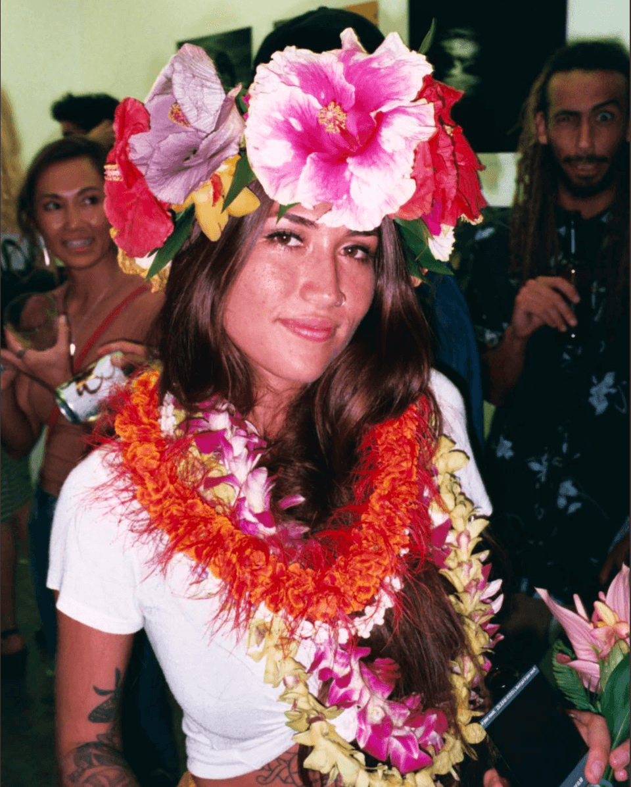

About Reanna
I'm an artist, photographer, producer, and videographer currently based in Honolulu, Hawai'i. My career began as a barista, where I developed a passion for creativity and connection. This led me to freelance work as an analog photographer, video editor, and colorist, honing my ability to manage multiple projects simultaneously. Since then, I've gained experience in all facets of production, from art direction and styling to permitting, event coordination, and various pre- and post-production tasks. My work merges technical skill with creative intuition, capturing unique moments that evoke emotion and connection. Let's connect!


 @goodluckbuck.co
@goodluckbuck.co
 /reanna-chambers
/reanna-chambers
 reanna@reannachambers.com
reanna@reannachambers.com